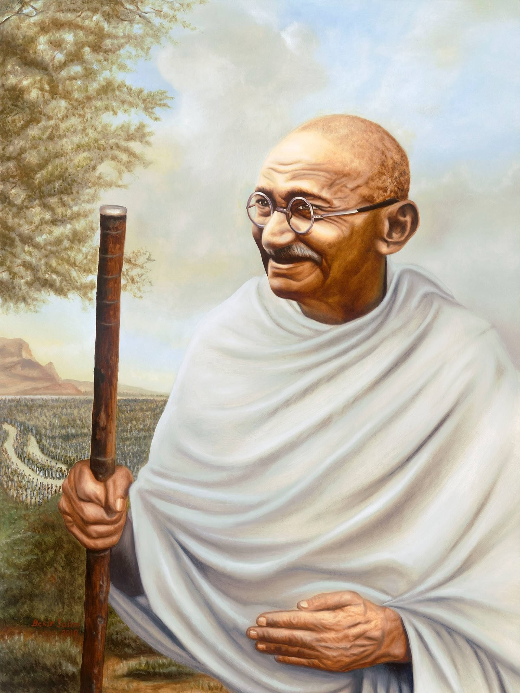

Tribute Page

Mahatma Gandiji
1869-1948
Father of the Nation
Mohandas Karamchand Gandhi was a prominent leader of India's independence struggle.
His full name was Mohandas Karamchand Gandhi, and he is often called the "Father of the Nation"
by Indians. Gandhi led the fight for India's independence from British rule through the principles
of non-violence (Ahimsa) and civil disobedience (Satyagraha).
Early life and background :-
Mahatma Gandhi was born on October 2, 1869, in Porbandar, a coastal town in present-day Gujarat, India.
His father, Karamchand Gandhi, was the chief minister (Diwan) of Porbandar, and his mother, Putlibai Gandhi,
was deeply religious, which influenced Gandhi's later values and beliefs.
Eduction Journy :-
Primary Education: Gandhi began his early education in Porbandar and later continued it in Rajkot, Gujarat.
He was considered an average student but was known for his discipline and good behavior.
Higher Education in India: After completing his schooling, Gandhi briefly attended Samaldas College in Bhavnagar,
Gujarat, but he struggled to adjust to the college environment and dropped out.
Legal Studies in London: In 1888, at the age of 18, Gandhi traveled to London to study law. He enrolled at University
College London and completed a law degree, training to become a barrister. Gandhi was called to the bar at the Inner Temple
in 1891 and returned to India to practice law.
Surgical moments :-
Mahatma Gandhi's life involved several critical "surgical moments," which refers to decisive and transformative events that
significantly impacted his leadership and the Indian independence movement. Some of the most pivotal moments include:
Experience in South Africa (1893-1915):
First Protest (1893): In South Africa, Gandhi faced racial discrimination when he was thrown off a train despite holding a
valid first-class ticket. This incident motivated him to fight against racial injustice.
Formation of Satyagraha (1906): Gandhi developed the concept of Satyagraha, or non-violent resistance, during his time in
South Africa. He led several successful campaig
One of the most iconic moments in India's independence movement was the Salt March or Dandi March in 1930. Gandhi and his
followers marched 240 miles to the coastal town of Dandi to make salt, defying British laws that prohibited Indians from
producing their own salt. This act of civil disobedience garnered worldwide attention and highlighted Gandhi’s leadership.
Quit India Movement (1942):
During World War II, Gandhi launched the Quit India Movement, demanding an end to British rule in India. The movement,
although suppressed by the British, intensified the demand for independence and led to widespread protests and strikes
across the country.
Partition and Assassination (1947-1948):
In 1947, India gained independence, but Gandhi was deeply saddened by the partition of India and Pakistan, which led to
communal violence. Despite his efforts for Hindu-Muslim unity, the violence continued. On January 30, 1948, Gandhi was
assassinated by Nathuram Godse, who opposed his efforts for reconciliation.
These moments were "surgical" in that they marked significant shifts in both Gandhi's strategies and the broader Indian
struggle for independence, shaping the political landscape of India.
Final Jouny :-
Mahatma Gandhi was assassinated on January 30, 1948, in New Delhi, India. He was shot at point-blank range by Nathuram Godse,
a Hindu nationalist who opposed Gandhi's advocacy for peace and reconciliation between Hindus and Muslims